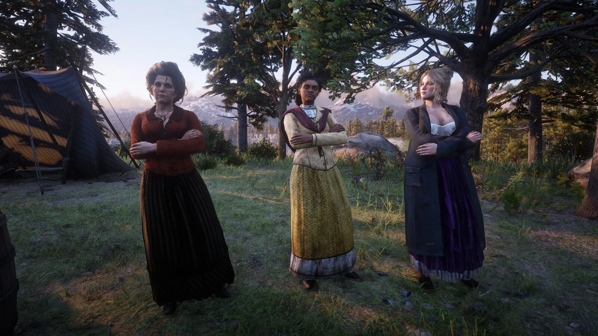
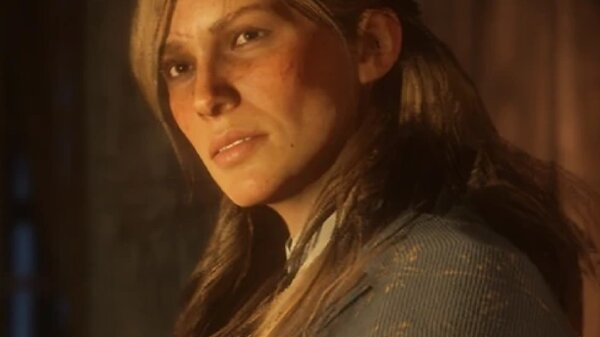
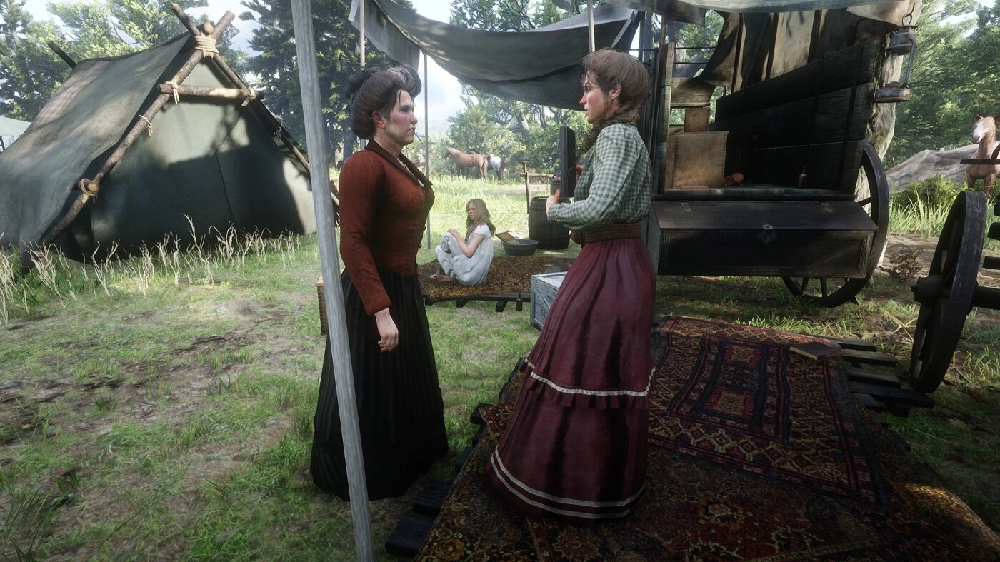

Character · Van der Linde gang
Susan Grimshaw
Susan Grimshaw is the matriarch and de facto manager of the Van der Linde gang's camp. She keeps the household running, disciplines its members and enforces order with a sharp tongue and, when needed, a shotgun.
One of the gang's longest-serving members and fiercely loyal to Dutch van der Linde, Susan holds the camp together long after its discipline begins to fray.
- Died
- 1899
- Status
- Deceased
- Nationality
- American
- Affiliation
- Van der Linde gang
- Role
- Camp matriarch
- Games
- Red Dead Redemption 2
Biography
Running the camp
Susan oversees the daily life of the camp: cooking, supplies, chores and the wellbeing, and the behaviour, of its members. She is especially firm with the younger women, Karen, Tilly and Mary-Beth, whom she both bosses and protects.
Loyal to Dutch
One of the gang's longest-serving members, Susan has a history with Dutch going back to its early days, and she remains devoted to him even as his leadership unravels.
Personality
Hard, blunt and tireless, Susan has no patience for idleness or self-pity. Beneath the severity is real care for the gang she treats as family.
Relationships

Dutch van der Linde
The leader she has followed since the gang's earliest days, and to whom she stays loyal to the end.

Hosea Matthews
A fellow gang elder; together they form the steadying older generation at the heart of the camp.

Sadie Adler
A widow taken in by the gang, whom Susan helps settle into camp life after the loss of her husband.

Arthur Morgan
A gang mainstay Susan has known for years and treats, like the rest, as part of her extended family.
Death and fate
Susan dies in 1899 at Beaver Hollow during the gang's collapse. When she confronts Micah Bell over his betrayal, shotgun in hand, he shoots her dead.
Behind the scenes
Susan appears in Red Dead Redemption 2 (2018). She is remembered as the person who, more than anyone, keeps the gang functioning day to day, and for her blunt warnings about what the camp would become without her.
Trivia
- She manages the camp's daily life and chores.
- She has a past with Dutch from the gang's early years.
- She is killed by Micah Bell at Beaver Hollow.
Gallery
